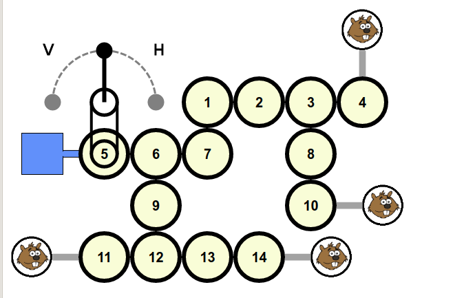

Lösning
Det finns många sätt att ta sig an detta problem, men vi beskriver här den troligen enklaste metoden.
Allra först klickar man på handtaget för att orientera slangen närmast vattenbehållaren korrekt. Med start från vattenbehållaren korrigerar man successivt slangarna en efter en, så att vattnet kommer längre och längre ut mot bävrarna.
När vägen är spärrad måste man vrida det aktuella hjulet så att slangen hamnar korrekt, men utan att göra några modifieringar i den tidigare vägen där vattnet redan kan rinna.
För att göra det måste man klicka på handtaget åt rätt håll för att orientera det aktuella hjulet som man vill ha det. Sedan kopplar man loss det genom att klicka på det, och trycker ner handtaget igen, denna gång åt andra hållet, för att motverka rotationen man nyss gjorde. Sedan kopplar man in hjulet igen med ett nytt klick. Vattnet flyter nu vidare ett eller flera steg.
Man fortsätter på detta sätt tills vattnet når Castor ( eller i detta fall alla fyra bävrarna).
Här är en lista på operationer som löser uppgiften :
2 P 2 P 3 P 3
2 P 2 P 3 P 3 P 4 P 4 P 6 P 6
7 V 7 V 2 H 2 H 10 V 10 V 9 H 9 V 12 H 12 V 14 H 14



En siffra betyder ett klick på motsvarande hjul, enligt bildens numrering.
Bokstaven P indikerar att man ska trycka ner handtaget P.
Bokstaven V indikerar att man ska trycka ner handtaget åt vänster, och bokstaven H att man ska trycka ner det åt höger.
Det är datavetenskap !
Den svåra versionen av detta problem kan datavetenskapligt åskådliggöras som ett träd. Vattenbehållaren är trädets rot, hjulen inre noder, och bävrarna trädets löv. De enklare versionerna av problemet kan också ses som träd, men mycket enkla med bara ett löv.
Det gäller alltså att hitta ett sätt att systematiskt få alla hjulen i rätt positioner relativt varandra. Det innebär att apllicera en algoritm. Lösningsalgoritmen som beskrivs ovan är en djup-först-sökning i trädet, där man utgår från roten och går ut gren för gren till varje löv.
När den genomlöper trädet är detta en s.k. Girig algoritm. I varje steg ser den bara till att det aktuella hjulet är korrekt vridet i förhållande till de tidigare stegen, utan att se till helheten. För den svåra versionen krävs en liten justering av algoritmen för att uppnå det minimala antalet bortkopplade hjul.